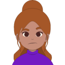

Seis personas de la comunidad que compartirán lo que saben.
Valentina rios
Fundadora de Parche Dev y desarrolladora web
Aprendió a programar en un curso nocturno.
Creó Parche Dev para que nadie tuviera que aprender solo.
Sesiones: Bienvenida: por qué existe Parche Dev
Panel: Mi primer empleo en tecnología (moderadora)
Andrés Mejía
Desarrollador frontend
ALleva ocho años haciendo sitios web y cree que un buen HTML resuelve la mitad de una interfaz.
Creó Parche Dev para que nadie tuviera que aprender solo.
Sesiones: HTML que se entiende sin CSS
Panel: Mi primer empleo en tecnología
Luisa Ocampo

Analista de datos
Convierte hojas de cálculo caóticas en bases de datos ordenadas.
CPara ella, SQL es un superpoder.
Sesiones: SQL para curiosos
Panel: Mi primer empleo en tecnología
Daniela Zapata
Especialista en accesibilidad web
Revisa sitios para que los usen personas con lector de pantalla, con teclado o con baja visión
CPara ella, SQL es un superpoder.
La web es para todos: accesibilidad desde el día uno
Santiago Gil
Desarrollador backend
Automatiza todo lo que se repite más de dos veces.
En su taller harás un bot paso a paso.
Taller: Tu primer bot con Python
Julián Castaño
Desarrollador full stack
Publicó su primer sitio con HTML puro y hoy despliega en la nube.
charla es en inglés.
From zero to deploy
Panel: Mi primer empleo en tecnología